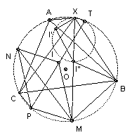

X is a variable point on the arc AB of the circumcircle of ABC which does not contain C. I' is the incenter of AXC and I" is the incenter of BXC. Show that the circumcircle of XI'I" passes through a fixed point of the circumcircle of ABC.
Solution

Let M be the midpoint of the arc BC (not containing A). Then ∠BMX = ∠CMX, so M lies on the line XI". Also ∠MBI" = ∠MBC + ∠CBI" = ∠MAC + ∠CBI" (MBAC cyclic) = ∠I"AB + ∠CBI" (AI" bisects ∠BAC) = ∠I"AB + ∠I"BA (BI" bisects ∠BAC) = ∠MI"B. So MBI" is isosceles and hence MI" = MB = MC. Let I be the incenter of ABC. The MA and IA both bisect angle BAC, so I lies on MA. But if X = A then I" coincides with I, so I must also lie on the circle center M through B and C.
Similarly, let N be the midpoint of the arc AC. Then the circle center N through A and C contains I and I'. Let the line through C parallel to MN meet the circumcircle again at P. Since CP and MN are parallel chords we have CM = NP and CN = MP. Hence MI = MC = NP and MP = NC = NI, so MPNI is a parallelogram. Let the line PI meet the circumcircle again at T. [We will show that XI'I"T is cyclic and hence the circumcircle of XI'I" passes through the fixed point T.]
Since MPNI is a parallelogram, the points M and N are equidistant from the line PI. So the area PTM = area PTN. Hence MT.(MP sin PMT) = NT.(NP sin PNT). But MPNT is cyclic, so sin PMT = sin PNT. Hence MT.MP = NT.NP. But MP = NC = NI' and NP = MC = MI", so MT/MI" = NT/NI'. ∠I'NT = ∠XNT (same angle) = ∠XMT = ∠I"MT, so triangles I'NT and I"MT are similar.
Hence ∠NTI' = ∠MTI". So ∠I"TI' = ∠MTN - ∠MTI" + ∠MTI' = ∠MTN = ∠MXN (MTXN cyclic) = ∠I"XI' (same angle). So I"TXI' is cyclic and the result follows.

© John Scholes
jscholes@kalva.demon.co.uk
10 Oct 2002
Last corrected/updated 22 Oct 2002